Создание пакетов
-
Что такое catkin пакет?
Чтобы catkin пакет считался таким, он должен иметь признаки:- пакет должен содержать файл package.xml
- должен содержать файл CMakeLists.txt
- У каждого пакета должна быть своя собственная папка. Это означает, что нет ни вложенных пакетов, ни нескольких пакетов, использующих один и тот же каталог.
-
Пакеты в catkin workspace
Обычный catkin workspace:
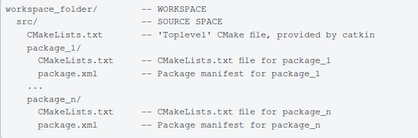 - Создание catkin-пакета.
Общий синтаксис команды создания пакета:
catkin_create_pkg <package_name> [depend1] [depend2] [depend3]
catkin_create_pkg требует, чтобы вы указали ему имя пакета и, возможно, список зависимостей, от которых зависит этот пакет.
Пример:
cd ~/catkin_ws/src переходим в каталог src
catkin_create_pkg beginner_tutorials std_msgs rospy roscpp

Создаем пакет beginner_tutorials, который зависит от нод std_msgs, rospy и roscpp.В результате будет создана папка beginner_tutorials, содержащая файлы package.xml и CMakeLists.txt, которые были частично заполнены информацией, которую вы предоставили catkin_create_pkg.CMakeLists.txt - файл сборки, где описано какие библиотеки добавлять в пакет, какие ноды входят в пакет.
package.xml - файл, где с помощью тегов описаны зависимости.
Еще стандартной папкой в пакете является папка include.
Папка launch содержит файлы.launch, которые позволяют запускать одновременно несколько нод либо одну ноду с какими-то параметрами.
src - папка, где лежат скрипты наших нод. Возможно будет папка scripts, выполняющая аналогичные функции.
Изменение рабочего пространства catkin (catkin workspace) с учетом нового пакета и исполнение setup файла
cd ~/catkin_ws
catkin_make
После создания рабочей области в подпапке devel будет создана аналогичная структура, которую вы обычно находите в /opt/ros/noetic
Чтобы добавить переменные, нужно выполнить команду:
. ~/catkin_ws/devel/setup.bash- Пакетные зависимости:
- Зависимости первого порядка
При использовании catkin_create_pkg ранее были предоставлены несколько зависимостей от пакетов. Эти зависимости первого порядка теперь можно просмотреть с помощью инструмента rospack:
rospack depends1 <package_name>
Выдаст список зависимостей, которые были установлены во время выполнения команды catkin_create_pkg. Эти зависимости хранятся в файле package.xml.
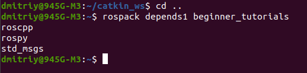 - Косвенные зависимости
Во многих случаях у зависимостей также будут свои собственные зависимости. Например, у rospy есть другие зависимости.

Пакет может иметь много косвенных зависимостей:
rospack depends <package_name> - выведет все зависимости. - Файл package.xml содержит:
- тег description

- тег maintainer
Это обязательный и важный тег для package.xml потому что он позволяет другим пользователям узнать, к кому обратиться по поводу пакета. Требуется как минимум один специалист по сопровождению, но вы можете нанять их много, если хотите. Имя сопровождающего указано в тексте тега, но также есть атрибут электронной почты, который необходимо заполнить
- теги лицензий
Обязательный. Наиболее распространенными лицензиями с открытым исходным кодом являются BSD, MIT, Boost Software License, GPLv2, GPLv3, LGPLv2.1 и LGPLv3. Вы можете прочитать о некоторых из них в разделе Open Source Initiative. В этом руководстве мы будем использовать лицензию BSD, поскольку остальные компоненты core RODS уже используют ее теги зависимостей

- теги зависимостей:
Следующий набор тегов описывает зависимости вашего пакета. Зависимости разделены на:
build_depend
buildtool_depend
exec_depend
test_depend
Более подробное объяснение этих тегов приведено в документации о зависимостях Catkin. Поскольку мы передали std_msgs, roscpp и rospy в качестве аргументов для catkin_create_pkg, зависимости будут выглядеть следующим образом:
- тег конца файла </package>
- тег description
- Зависимости первого порядка
Создание publisher-ноды talker.cpp на языке C++ для пакета beginner_tutorials
Репозиторий ROS, откуда берутся коды нод.- Перейдем в каталог пакета: roscd beginner_tutorials
- Создадим внутри каталог src: mkdir -p src
Этот каталог будет содержать все исходные файлы (ноды) для нашего пакета beginner_tutorials. - Внутри этого созданного каталога создадим файл talker.cpp, код скопируем с https://raw.github.com/ros/ros_tutorials/kinetic-devel/roscpp_tutorials/talker/talker.cpp:
nano src/talker.cpp
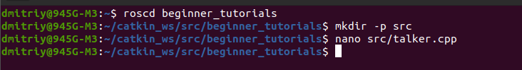Разберем код по пунктам:
- 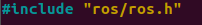
ros/ros.h - это раздел, который включает в себя все заголовки, необходимые для использования наиболее распространенных элементов системы ROS. -

включает в себя сообщение std_msgs/String, которое находится в пакете std_msgs. Это заголовок, автоматически генерируемый из файла String.msg в этом пакете. -
Инициализируем (вызываем) ROS. Позволяет ROS выполнять переназначение имен через командную строку - сейчас это не важно. Здесь мы также указываем имя нашего узла (ноды). Имена узлов должны быть уникальными в запущенной системе. Используемое имя должно быть базовым, т.е. в нем не может быть символа /. - 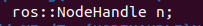
NodeHandle является основной точкой доступа для обмена данными с системой ROS. Первый созданный NodeHandle полностью инициализирует этот узел, а последний уничтоженный NodeHandle закроет узел. - 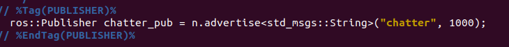
Сообщите мастеру ROS, что мы собираемся опубликовать сообщение типа std_msgs/String в топик chatter. Это позволяет мастеру сообщить любым узлам, прослушивающим chatter, что мы собираемся опубликовать данные в этот топик. Вторым аргументом является размер нашей очереди публикации. В этом случае, если мы публикуем слишком быстро, в буфере будет храниться максимум 1000 сообщений, прежде чем мы начнем выбрасывать старые. - 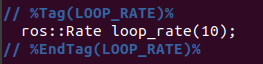
Объект ros::Rate позволяет вам указать частоту, с которой вы хотели бы выполнять цикл. Он будет отслеживать, сколько времени прошло с момента последнего вызова функции Rate::sleep(), и будет находиться в режиме ожидания в течение необходимого периода времени. Сейчас мы говорим, что хотим работать на частоте 10 Гц. -

По умолчанию roscpp установит обработчик SIGINT, который обеспечивает обработку Ctrl-C, что приведет к тому, что ros::ok() вернет значение false, если это произойдет.
ros::ok() вернет значение false, если:- получено значение SIGINT (Ctrl-C)
- мы были отключены от сети другим узлом с таким же именем
- функция ros::shutdown() была вызвана другой частью приложения.
- все функции ros::Nodehandle были уничтожены
-
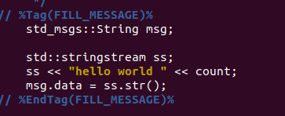
Мы передаем сообщение в ROS, используя класс, адаптированный для сообщений, который обычно генерируется из msg-файла. Возможны более сложные типы данных, но пока мы будем использовать стандартное строковое сообщение, которое состоит из одного элемента: "данные". 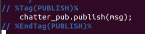
Функция publish() - это способ отправки сообщений. Параметр в скобках - это объект message. Тип этого объекта должен совпадать с типом, заданным в качестве параметра шаблона для вызова advertise().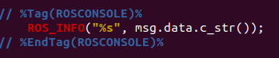
ROS_INFO и friends - это наша замена printf/cout. Дополнительную информацию смотрите в документации rosconsole.
Вызов ros::spinOnce() здесь не требуется для этой простой программы, потому что мы не получаем никаких обратных вызовов. Однако, если бы вы добавили подписку в это приложение и у вас не было бы функции ros::spinOnce(), ваши обратные вызовы никогда бы не были вызваны. Так что добавьте это для пущей убедительности.
Используем объект ros::Rate для перехода в спящий режим на оставшееся время, чтобы достичь скорости публикации 10 Гц.
Инициализируем систему ROS
Объявляем, что мы собираемся публиковать сообщения std_msgs/String в топик chatter для master ROS
Цикл публикации сообщений в chatter выполняется 10 раз в секунду - 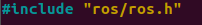
Создание ноды-подписчика listener.cpp на языке C++
nano src/listener.cppКод скопировал с https://raw.githubusercontent.com/ros/ros_tutorials/kinetic-devel/roscpp_tutorials/listener/listener.cpp
Разбор кода по пунктам:

Это функция обратного вызова callback(), которая будет вызываться при поступлении нового сообщения в топик chatter. Сообщение передается с помощью boost shared_ptr, что означает, что вы можете сохранить его, если хотите, не беспокоясь о том, что оно будет удалено под вами, и не копируя исходные данные.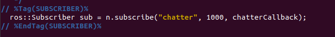
Подписывается на топик chatter с мастером. ROS будет вызывать функцию chatterCallback() всякий раз, когда поступает новое сообщение. Второй аргумент - это размер очереди, на случай, если мы не сможем обрабатывать сообщения достаточно быстро. В этом случае, если очередь достигнет 1000 сообщений, мы начнем отбрасывать старые сообщения по мере поступления новых.Функция NodeHandle::subscribe() возвращает объект ros::Subscriber, который вы должны сохранить, пока не захотите отказаться от подписки. Когда объект Подписчика будет уничтожен, он автоматически отпишется от темы chatter.
Существуют версии функции NodeHandle::subscribe(), которые позволяют указать функцию-член класса или даже что-либо, вызываемое с помощью Boost.Функциональный объект. Более подробная информация содержится в обзоре roscpp.

функция ros::spin() переходит в цикл, вызывая обратные вызовы сообщений как можно быстрее. Но не волнуйтесь, если ей нечего делать, она не будет использовать много ресурсов процессора. функция ros::spin() завершит работу, как только функция ros::ok() вернет значение false, что означает, что функция ros::shutdown() была вызвана либо обработчиком Ctrl-C по умолчанию, либо мастером, сообщающим нам о завершении работы, либо вызвана вручную.Существуют и другие способы обработки обратных вызовов, но мы не будем здесь о них беспокоиться. В пакете roscpp_tutorials есть несколько демонстрационных приложений, которые это демонстрируют. В обзоре roscpp также содержится дополнительная информация.
Инициализируем систему ROS
Подписываемся на топик chatter
Запускаем, ожидая поступления сообщений
Когда приходит сообщение, вызывается функция chatterCallback()
Building нод
- Редактируем CMakeLists.txt, добавляем эти строки:
add_executable(talker src/talker.cpp) target_link_libraries(talker ${catkin_LIBRARIES}) add_dependencies(talker beginner_tutorials_generate_messages_cpp) add_executable(listener src/listener.cpp) target_link_libraries(listener ${catkin_LIBRARIES}) add_dependencies(listener beginner_tutorials_generate_messages_cpp)Это создаст два исполняемых файла, talker и listener, которые по умолчанию будут помещены в каталог пакетов вашего пространства разработки, расположенный по умолчанию по адресу ~/catkin_ws/devel/lib/<package name>.
Строка из CMakeLists.txt: add_dependencies(talker beginner_tutorials_generate_messages_cpp) гарантирует, что заголовки сообщений (Headers) этого пакета будут сгенерированы перед использованием. Если вы используете сообщения из других пакетов в своем рабочем пространстве catkin, вам также необходимо добавить зависимости к их соответствующим целям генерации, поскольку catkin создает все проекты параллельно. Начиная с *Groovy*, вы можете использовать следующую переменную для определения всех необходимых целей:
target_link_libraries(talker ${catkin_LIBRARIES})Переформируем наши пакеты настройки:
cd ~/catkin_ws
catkin_makeНаписание простых Publisher and Subscriber на Python
Создадим узел (ноду) publisher ("talker"), который будет постоянно транслировать сообщение.
- roscd beginner_tutorials
Создадим папку scripts, которая будет хранить файлы.py
mkdir scripts
В эту папку скачаем готовый talker.py из гитхаба:
wget https://raw.github.com/ros/ros_tutorials/kinetic-devel/rospy_tutorials/001_talker_listener/talker.py
Сделаем его исполняемым:
chmod +x talker.pyКод talker.py:
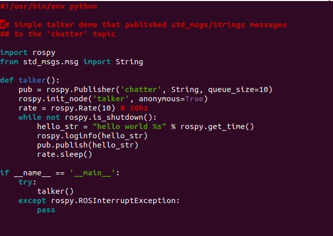
Разъяснение кода:
- #!/usr/bin/env python с этой строки начинается каждая нода (скрипт) на python.
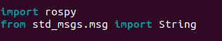
Вам необходимо импортировать rospy, если вы пишете ROS-узел. Импорт std_msgs.msg необходим для того, чтобы мы могли повторно использовать тип сообщения std_msgs/String (простой строковый контейнер) для публикации.
Этот раздел кода определяет интерфейс talker для остальной части ROS. pub = rospy.Издатель("chatter", String, queue_size=10) объявляет, что ваш узел публикует в топике chatter, используя тип сообщения String. String здесь на самом деле является классом std_msgs.msg.String. Аргумент queue_size является новым в ROS hydro и ограничивает количество сообщений в очереди, если какой-либо подписчик не получает их достаточно быстро. В старых дистрибутивах ROS этот аргумент просто не используется.Следующая строка, rospy.init_node(NAME, ...), очень важна, поскольку она сообщает rospy имя вашего узла - пока у rospy не будет этой информации, он не сможет начать взаимодействие с мастером ROS. В этом случае ваш узел получит имя talker. ПРИМЕЧАНИЕ: имя должно быть базовым, т.е. оно не должно содержать никаких косых черт "/".
anonymous = True гарантирует, что ваш узел будет иметь уникальное имя, добавляя случайные числа в конец имени. Обратитесь к разделу Инициализация и завершение работы - Инициализация вашего узла ROS в документации rospy для получения дополнительной информации о параметрах инициализации узла.
Эта строка создает объект Rate rate. С помощью своего метода sleep() он предлагает удобный способ зацикливания с желаемой скоростью. С его аргументом 10 мы должны ожидать, что цикл будет выполняться 10 раз в секунду (до тех пор, пока наше время обработки не превысит 1/10 секунды!).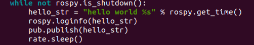
Этот цикл представляет собой довольно стандартную конструкцию rospy: проверка флага rospy.is_shutdown() и последующее выполнение работы. Вы должны проверить is_shutdown(), чтобы проверить, должна ли ваша программа завершаться (например, при наличии комбинации клавиш Ctrl-C или иным образом). В данном случае "работа" - это вызов pub.publish(hello_str), который публикует строку в нашей теме chatter. Цикл вызывает функцию rate.sleep(), которая находится в режиме ожидания, достаточном для поддержания желаемой скорости в цикле.(Вы также можете столкнуться с функцией rospy.sleep(), которая похожа на функцию time.sleep(), за исключением того, что она также работает с имитируемым временем (см. Часы).)
Этот цикл также вызывает rospy.loginfo(str), который выполняет тройную функцию: сообщения выводятся на экран, записываются в файл журнала узла и записываются в rosout. rosout - это удобный инструмент для отладки: вы можете извлекать сообщения с помощью rqt_console вместо того, чтобы искать окно консоли с выводом вашего узла.
std_msgs.msg.String - это очень простой тип сообщения, поэтому вам может быть интересно, как выглядит публикация более сложных типов. Общее правило заключается в том, что аргументы конструктора располагаются в том же порядке, что и в файле .msg. Вы также можете не вводить никаких аргументов и инициализировать поля напрямую, например:
msg = String()
msg.data = str
или же вы можете инициализировать некоторые поля, а для остальных оставить значения по умолчанию:
String(data=str)
В дополнение к стандартной проверке Python __main__check, при этом обнаруживается ошибка rospy.Исключение ROSInterruptException, которое может быть вызвано методами rospy.sleep() и rospy.Rate.sleep() при нажатии Ctrl-C или при выключении вашего узла иным образом. Причина, по которой возникает это исключение, заключается в том, что вы случайно не продолжаете выполнение кода после sleep().
- В CMakeLists.txt добавить строки:
catkin_install_python(PROGRAMS scripts/talker.py DESTINATION ${CATKIN_PACKAGE_BIN_DESTINATION} )
Написание ноды subscriber:
-
- roscd beginner_tutorials/scripts/
- wget https://raw.github.com/ros/ros_tutorials/kinetic-devel/rospy_tutorials/001_talker_listener/listener.py
- chmod +x listener.py
Код:
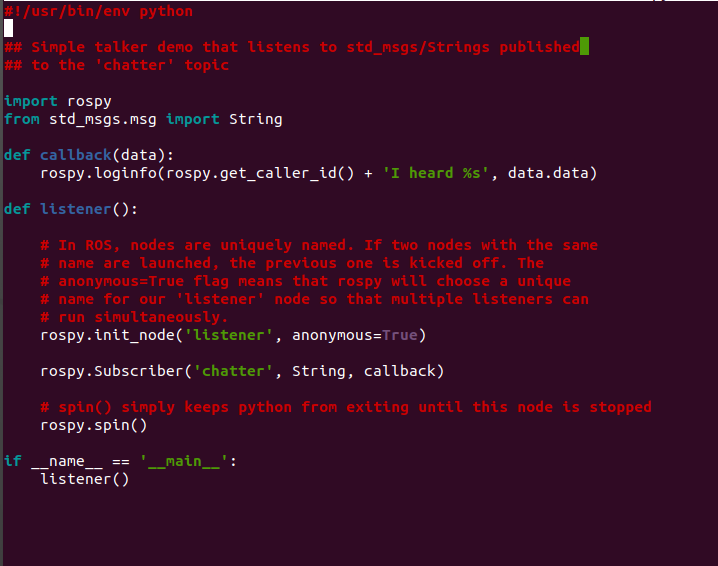В CMakeLists.txt добавляем строки:
catkin_install_python(PROGRAMS scripts/talker.py scripts/listener.py DESTINATION ${CATKIN_PACKAGE_BIN_DESTINATION} )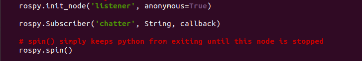
Это означает, что ваш узел подписан на тему chatter, которая имеет тип std_msgs.msgs.Строка. При получении новых сообщений вызывается обратный вызов с этим сообщением в качестве первого аргумента.Мы также немного изменили вызов rospy.init_node(). Мы добавили аргумент ключевого слова anonymous=True. ROS требует, чтобы у каждого узла было уникальное имя. Если появляется узел с таким же именем, он повторяет предыдущий. Это значит, что неисправные узлы могут легко быть выкинут из сети. Анонимные=флаг True рассказывает rospy чтобы создать уникальное имя для узла, так что вы можете иметь несколько узлов listener.py легко работать.
Последнее дополнение: функция rospy.spin() просто не позволяет вашему узлу завершать работу до тех пор, пока он не будет выключен. В отличие от roscpp, функция rospy.spin() не влияет на функции обратного вызова абонента, поскольку у них есть свои собственные потоки.
- Мы используем CMake в качестве нашей системы сборки, и, да, вы должны использовать ее даже для узлов Python. Это необходимо для того, чтобы убедиться, что автоматически сгенерированный код Python для сообщений и служб создан.
Перейдите в свое рабочее пространство catkin и запустите catkin_make:
cd ~/catkin_ws
catkin_make
Выполнение publisher
Первой командой вызовем мастера:
roscore
Еесли вы используете catkin, убедитесь, что у вас есть исходный код для вашего рабочего пространства setup.sh файл после вызова catkin_make, но перед выполнением нашего публишера:
cd ~/catkin_ws
source ./devel/setup.bash
Выполним нашего созданного публишера на python:
rosrun beginner_tutorials talker.py
или rosrun beginner_tutorials talker (C++)
Работает:
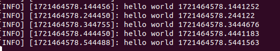Теперь выполнение подписчика listener.py
rosrun beginner_tutorials listener.py или rosrun beginner_tutorials listener на языке C++
Работает.Recording data (creating a bag file) Запись данных (создание bag файла)
В этом разделе руководства вы узнаете, как записывать данные по топикам из запущенной системы ROS. Данные по топикам будут накапливаться в файле bag.Сначала выполните следующие команды в отдельных терминалах:
roscore - первый терминал
2 терминал - rosrun turtlesim turtlesim_node
3 терминал - rosrun turtlesim turtle_teleop_keyЭто запустит два узла - визуализатор turtlesim и узел turtle_teleop_key, который позволяет управлять turtlesim с клавиатуры с помощью клавиш со стрелками на клавиатуре.
rostopic list -v - в 4 терминале, выведем список запущенных в данный момент топиков.

Список published (публикуемых) топиков - это единственные типы сообщений, которые потенциально могут быть занесены в файл журнала данных, поскольку в журнал записываются только публикуемые сообщения. Топик /turtle 1/cmd_vel - это командное сообщение, опубликованное teleop_turtle, которое принимается в качестве входных данных программой turtlesim. Сообщения /turtle1/color_sensor и /turtle1/pose являются выходными сообщениями, опубликованными turtlesim.Теперь мы запишем публикуемые данные. Откройте новое окно терминала. В этом окне выполните следующие команды:
mkdir ~/bagfiles
cd ~/bagfiles
rosbag record -a
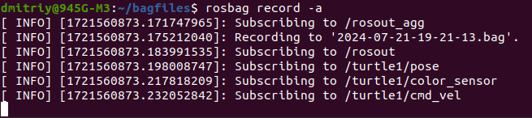
Создаем временный каталог для записи данных, а затем запускаем rosbag record с параметром -a, указывающим, что все публикуемые топики должны быть собраны в файле bag.Примерно 10 секунд двигаем черепаху.
В окне, где запустили rosbag нажать Ctrl-C. Теперь изучите содержимое каталога ~/bagfiles. Должны увидеть файл с именем, которое начинается с года, даты и времени и суффикса .bag. Это файл пакета, содержащий все топики, опубликованные любым узлом за время работы rosbag record.
еперь, когда мы записали файл bag с помощью rosbag record, мы можем просмотреть его и воспроизвести с помощью команд rosbag info и rosbag play. Сначала мы посмотрим, что записано в файле bag. Мы можем выполнить команду info - эта команда проверяет содержимое файла bag без его воспроизведения. Выполните следующую команду из каталога файлов bag:
rosbag info <your bagfile>
Следующим шагом в этом руководстве будет воспроизведение файла bag, чтобы воспроизвести поведение в запущенной системе. Сначала завершите работу программы teleop, которая, возможно, все еще запущена из предыдущего раздела - нажмите Ctrl-C в терминале, где вы запустили turtle_teleop_key. Оставьте turtlesim запущенным. В окне терминала запустите следующую команду в каталоге, из которого смотрели инфо о бэгфайле:
rosbag play <your bagfile>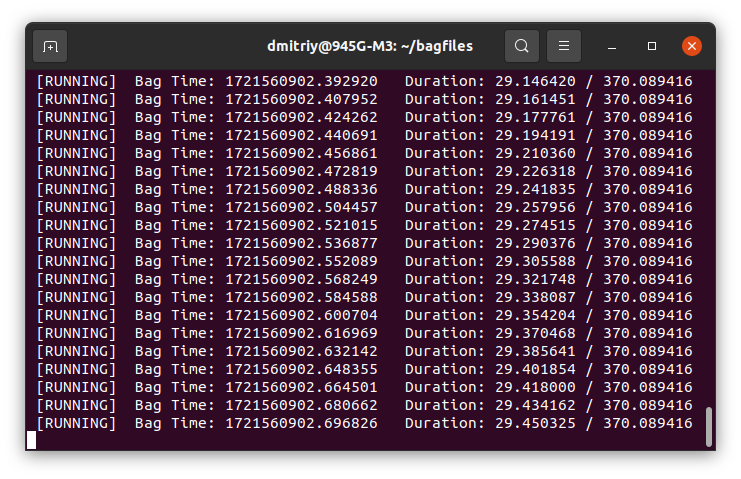
В режиме по умолчанию rosbag play будет ждать в течение определенного периода времени (0,2 секунды) после объявления каждого сообщения, прежде чем начнет публиковать содержимое файла пакета. Некоторое время ожидания позволяет любому подписчику сообщения получать уведомления о том, что сообщение было объявлено и что за ним могут последовать другие сообщения. Если rosbag play публикует сообщения сразу после публикации рекламы, подписчики могут не получить первые несколько опубликованных сообщений. Период ожидания можно указать с помощью параметра -d.
В конечном итоге тема /turtle 1/cmd_vel будет опубликована, и черепаха должна начать перемещаться в turtlesim по схеме, аналогичной той, которую вы выполнили из программы teleop. Время между запуском rosbag play и перемещением черепашки должно быть примерно равно времени между запуском оригинальной записи rosbag и вводом команд с клавиатуры в начальной части руководства. Вы можете сделать так, чтобы воспроизведение rosbag не начиналось с начала файла bag, а начиналось на некоторое время позже начала, используя аргумент -s. Последним параметром, который может представлять интерес, является параметр -r, который позволяет вам изменять скорость публикации на определенный коэффициент. Если вы выполните:
rosbag play -r 2 <your bagfile>
вы должны увидеть, как черепаха совершает несколько иную траекторию - это траектория, которая получилась бы, если бы вы вводили команды с клавиатуры в два раза быстрее.Запись подмножества данных
При запуске сложной системы, такой как программный комплекс pr2, могут публиковаться сотни разделов, а в некоторых разделах, таких как потоки изображений с камер, потенциально публикуются огромные объемы данных. В такой системе часто нецелесообразно записывать лог-файлы, содержащие все темы, на диск в виде одного файла bag. Команда rosbag record поддерживает запись только определенных тем в файл bag, позволяя пользователям записывать только те темы, которые их интересуют.Если какие-либо узлы turtlesim запущены, закройте их и перезапустите файл запуска keyboard teleop:
rosrun turtlesim turtlesim_node
rosrun turtlesim turtle_teleop_key
В вашем каталоге bagfiles выполните следующую команду:
rosbag record -O subset /turtle1/cmd_vel /turtle1/pose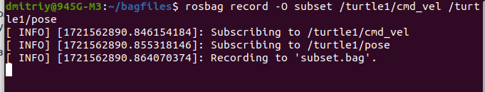
Аргумент -O указывает rosbag record на доступ к файлу с именем subset.bag, а аргументы topic указывают на то, что rosbag record подписывается только на эти две темы. Перемещайте черепашку в течение нескольких секунд, используя команды со стрелками на клавиатуре, а затем нажмите Ctrl-C на записи rosbag.
Теперь проверьте содержимое файла bag (rosbag info subset.bag). Вы должны увидеть что-то вроде этого, только с указанными темами: rosbag info subset.bag

Чтение сообщений из bag файла
Ссылки: ROS на Raspberry Pi: Использование rosbag для сохранения данных топиков
Reading messages from a bag fileПредполагая, что вы используете систему с уже запущенным ROS, вот быстрая команда для записи 30-секундного фрагмента данных в файл пакета только для интересующих вас тем, например: /topic1, /topic2 и /topic3. Поскольку мы устанавливаем продолжительность в 30 секунд, по истечении этого времени запись автоматически остановится:
rosbag record --duration=30 --output-name=/tmp/mybagfile.bag \
/topic1 /topic2 /topic3
Остальная часть этого руководства будет выполнена при условии, что скачали с помощью команды:
wget https://open-source-webviz-ui.s3.amazonaws.com/demo.bag
У меня не удаётся скачать, выдаёт ошибку 403У вас будет два варианта чтения/извлечения сообщений из файла bag.
Обратите внимание, что в любой из приведенных ниже команд команда time добавляется перед началом просто потому, что она выводит время выполнения каждой команды, а поскольку иногда эти команды могут занимать много времени, полезно использовать команду time, чтобы получить представление о том, сколько времени должна занять данная команда. Если вы не хотите его использовать, вы можете удалить временную часть любой из приведенных ниже команд.
Вариант 1: немедленно воспроизвести сообщения и просмотреть выходные данные на нескольких терминалах.
Вам нужно знать точные названия тем, которые вы хотели бы прочитать в файле bag. Итак, давайте посмотрим, что находится в файле bag. В любом терминале вручную проверьте все опубликованные темы и количество сообщений, опубликованных в каждой теме, с помощью этой команды:
time rosbag info /tmp/mybagfile.bag
или если знаете имена нужных топиков:
time rosbag info /tmp/mybagfile.bag | grep -E "(topic1|topic2|topic3)"
Вариант 2: используем скрипт ros_readbagfile, чтобы извлечь интересующие темы
Установка команды ros_readbagfile:- Скачал wget https://raw.githubusercontent.com/ElectricRCAircraftGuy/eRCaGuy_dotfiles/master/useful_scripts/ros_readbagfile.py
- Выполнил: chmod +x ros_readbagfile.py
- Убедититься, что есть каталог ~/bin для личных двоичных файлов: mkdir -p ~/bin
- Переместить этот файл в ~/bin: mv ros_readbagfile.py ~/bin/ros_readbagfile
- Переустановите свой файл ~/.profile, чтобы убедиться, что ~/bin находится на вашем пути и вы можете использовать эту новую команду `ros_readbag file`, которую вы только что установили.
Команда: . ~/.profile
Выполнил. - Установка python-зависимостей:
sudo apt install python3-rosbag
ln -si "${PWD}/ros_readbagfile.py" ~/bin/gs_ros_readbagfile
ln -si "${PWD}/ros_readbagfile.py" ~/bin/ros_readbagfile
. ~/.profile
Теперь можем выполнять команды: `gs_ros_readbagfile` или `ros_readbagfile`Примечание: если ваш терминал по-прежнему сообщает, что не может найти команду при попытке ее запуска, возможно, вам потребуется убедиться, что ~/bin является частью вашей переменной PATH.
Использовать команду буду на bag.файле /home/dmitriy/bagfiles/2024-07-21-19-21-13.bag- Определим точные имена тем, которые вы хотели бы прочитать в файле bag:
time rosbag info 2024-07-21-19-21-13.bag
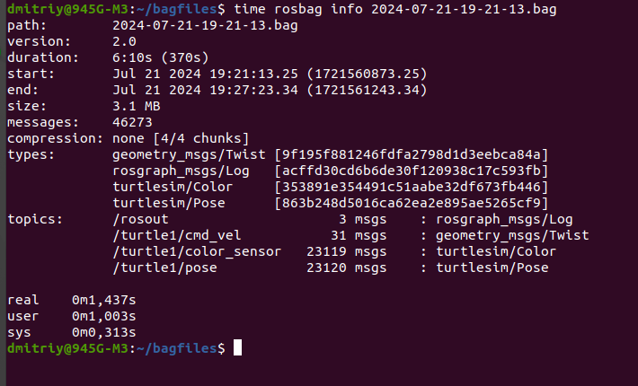 - Общий синтаксис команды readbagfile:
time ros_readbagfile <mybagfile.bag> [topic1] [topic2] [topic3] [...]
Выведу только 1 топик /turtle1/cmd_vel:
time ros_readbagfile 2024-07-21-19-21-13.bag /turtle1/cmd_vel
- Запишем сообщения 2024-07-21-19-21-13.bag /turtle1/cmd_vel в файл topics.yaml без вывода в терминал:
time ros_readbagfile <mybagfile.bag> [topic1] [topic2] [topic3] [...] > topics.yaml
Если хотим одновременно записывать в файл и выводить на экран, то использовать команду такого формата:
time ros_readbagfile <mybagfile.bag> [topic1] [topic2] [topic3] [...] | tee topics.yaml
При желании, чтобы увидеть "прогресс", наблюдая, как увеличивается размер файла yaml, в новом терминале запустить команду:
watch -n 1 'du -sk topics.yaml | awk '\''{printf "%.3f MiB %s\n", $1/1024, $2}'\'''Теперь просмотрите topics.yaml в вашем предпочтительном текстовом редакторе, чтобы просмотреть все сообщения, извлеченные из файла bag.
Анализ topics.yaml
Имеем файл topics.yaml, созданный на основе файла.bag. Теперь научимся извлекать из него нужную нам информацию.
Для начала установим: sudo apt update && sudo apt install ripgrepДопустим хотим найти список всех ключевых элементов, которые начинаются с "piksi_". Вы можете сделать это, выполнив поиск по строке "ключ: "piksi_" следующим образом:
time rg 'key: "piksi_' topics.yaml | sort -V | awk '!seen[$0]++'
Часть rg 'key: "piksi_" topics.yaml выполняет поиск в текстовом файле "topics.yaml" строки : "piksi_",
часть sort -V сортирует все выходные строки,
а часть awk '!seen[$0]++" удаляет повторяющиеся записи, так что вы видите только одну строку каждого совпадения.Другое применение:
Давайте выполним поиск по всем ключевым элементам данных, которые начинаются с "GPS", "Duration" или "Minimum". Поиск по регулярным выражениям типа "OR" выполняется в общем формате: (str1|str2|str3|и т.д.), где | в данном случае читается как "or". Итак, поиск "GPS", "Duration" или "Minimum" может быть выполнен с помощью следующей строки поиска по регулярному выражению:
'(key: "GPS|key: "Duration|key: "Minimum)'.
Команда: time rg '(key: "GPS|key: "Duration|key: "Minimum)' topics.yaml | sort -V | awk '!seen[$0]++'Зачем использовать для этой цели "ros_readbag file" вместо `rostopic echo -b`?
- Потому что rostopic работает очень медленно! Например, выполнение этой команды на быстродействующем компьютере (4-ядерный/8-поточный Pentium i7 с SSD-накопителем m.2) занимает 11,5 минут для чтения файла bag объемом 18 ГБ!
Однако скрипту ros_readbagfile требуется всего 1 минута 37 секунд на том же компьютере, чтобы прочитать ту же тему из того же файла bag объемом 18 ГБ! Таким образом, ros_readbagfile работает в 11,5/(1+37/60) = ~в 7 раз быстрее! - Потому что rostopic может одновременно читать только одну тему, в то время как ros_readbagfile может читать любое количество тем одновременно!
- Потому что rostopic работает очень медленно! Например, выполнение этой команды на быстродействующем компьютере (4-ядерный/8-поточный Pentium i7 с SSD-накопителем m.2) занимает 11,5 минут для чтения файла bag объемом 18 ГБ!
- roscd beginner_tutorials